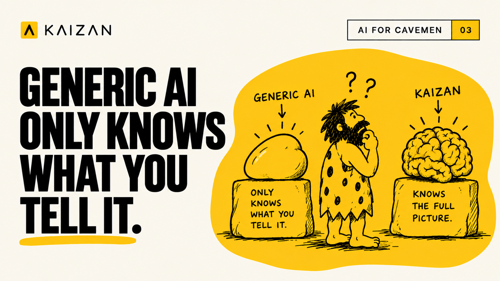

The Client Relationship Is Bigger Than Your Inbox

Your client does not just talk to you.
They talk to your strategist. They email your account director. They raise a concern on a call you were not on, then never raise it again. They mention a budget shift in passing, and the one person who heard it is on annual leave when renewal comes round.
The relationship lives across all of it. A generic AI assistant sees one slice of it, and only the slice you remembered to paste in.
The memory problem
Generic AI is reactive by design. You give it context, it works with that context. Take the context away and it knows nothing. Ask it what is really happening on an account and it will answer confidently from the fragment in front of it.
That works for drafting an email. It falls apart for managing a client relationship, because the information that matters most is almost always the information nobody thought to hand over.
Twenty different conversations can be running on a single client before you go in to meet with them, and staying on top of all of it is impossible. No account manager can hold that. No generic AI tool is even looking for it.
What a partial picture costs
Churn does not arrive as a surprise. It arrives as a series of small signals that nobody joined up.
A stakeholder goes quiet. Sentiment cools on one workstream while the headline numbers stay green. The person who championed you internally moves on and the new contact never gets briefed. Each of those sits in a different inbox, a different call recording, a different head.
By the time it reaches a QBR, the decision has usually already been made. Ricky Abbott, CEO at Transmission, reduced it to one question:
"I just want to know, is my revenue at risk?"
You cannot answer that from a transcript summary.
Kaizan starts with everything
Kaizan connects to the conversations already happening across your team. Calls, emails, meetings, the day to day exchanges that never make it into the CRM. It builds institutional memory on every client, continuously, without anyone stopping to write it down.
Our CEO Glen Calvert describes it as a living memory:
"It essentially just builds a living memory of everything that's going on with that client for you to access, understand and use."
On top of that memory sits CARE, a continuously updated read on the health of each relationship:
- Client satisfaction. How the client actually feels behind every interaction.
- Activity with stakeholders. Whether the right conversations are happening with the right people.
- Relationship quality. Whether trust is building or quietly eroding.
- Expansion. Whether the conditions are right to grow, and whether your team is acting on them.
CARE is a leading indicator, not a report card written after the fact. It tells you where a relationship is heading while you can still change the direction.
Memory you can interrogate
Institutional memory earns its keep the moment someone needs it under pressure. Joe Etchells at AIP/SearchLab uses it daily:
"I probably on a daily basis interrogate Kaizan, take me back to this meeting where so-and-so was talking about such-and-such. Without Kaizan, what's the alternative? Just reaching into the deepest recesses of your mind, which is obviously flawed."
Call prep is where it shows up most. Pulling up what a client pitched three months ago takes seconds instead of an afternoon of asking around.
That is the difference between an assistant that answers from what you gave it and an engine that answers from everything your client has ever told your team.
Seeing clearly is only half of it
Knowing a relationship is slipping is useful. Acting on it is what protects the revenue.
Kaizan's AI Helpers do the work that never fits into a human week. They flag the accounts that need attention before the signal becomes a conversation. They surface the expansion conditions your team would otherwise miss. They take the low value work off expensive people, so the time goes back into the client relationships that actually need a human in the room.
See clearly, then act early. In that order.
The short version
A generic AI assistant remembers what you tell it.
Kaizan remembers what your client told everyone.